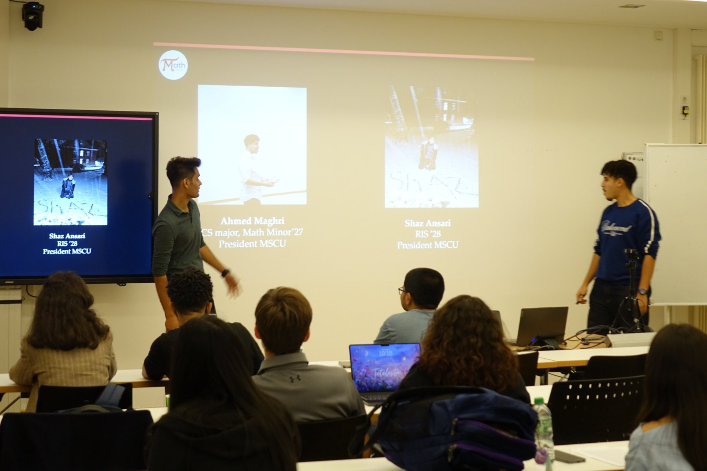
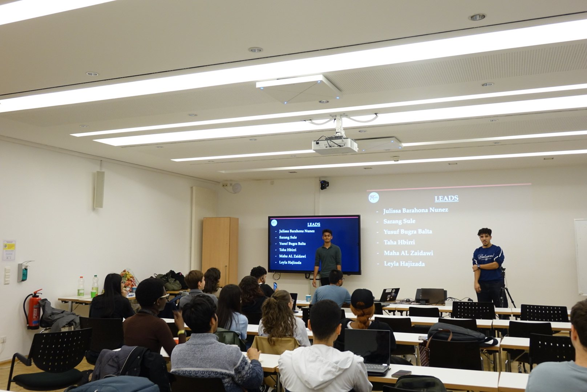
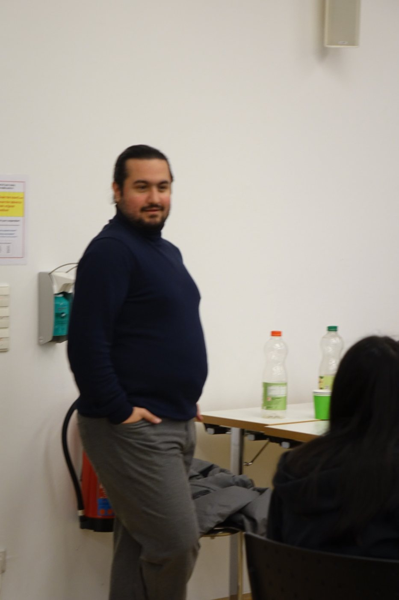
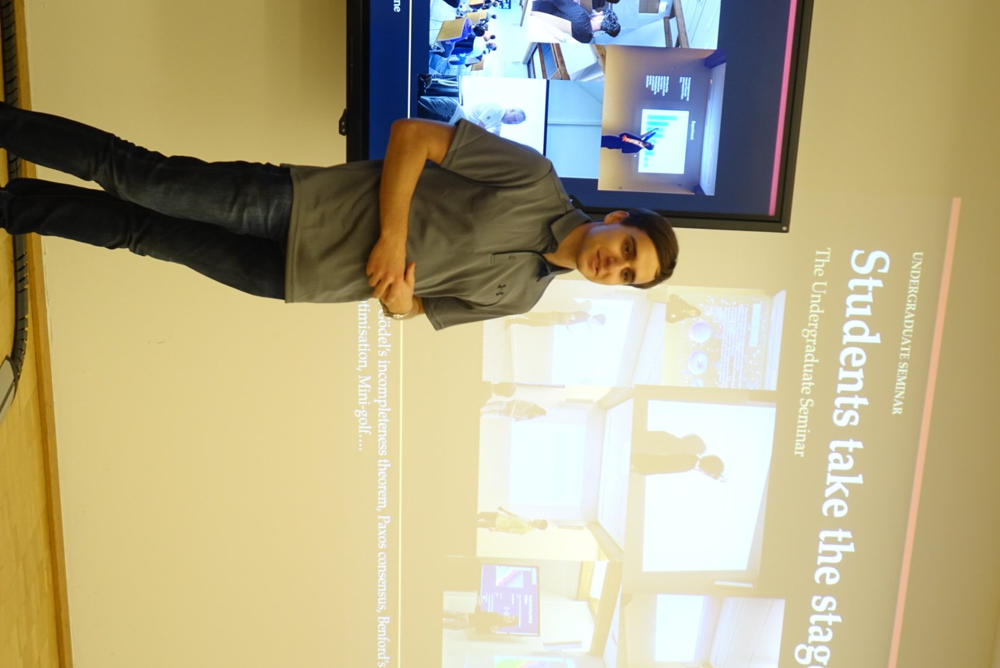
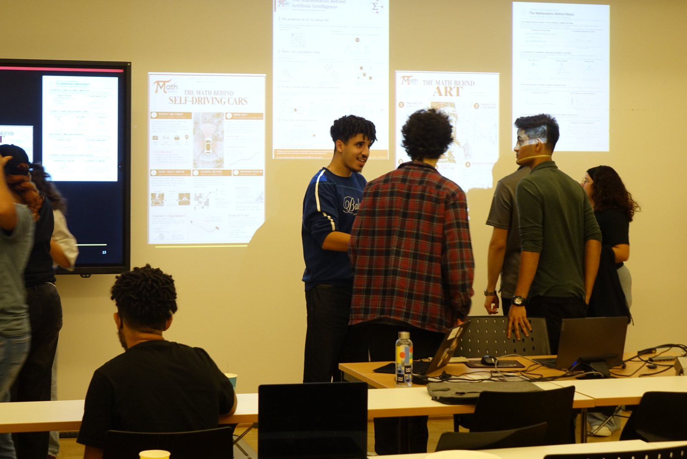
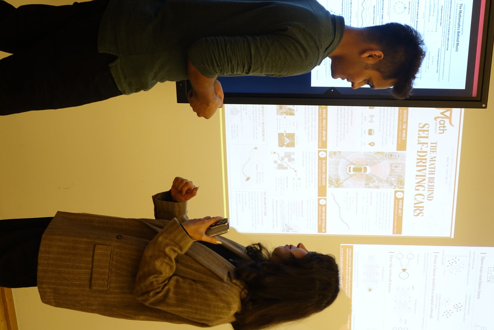
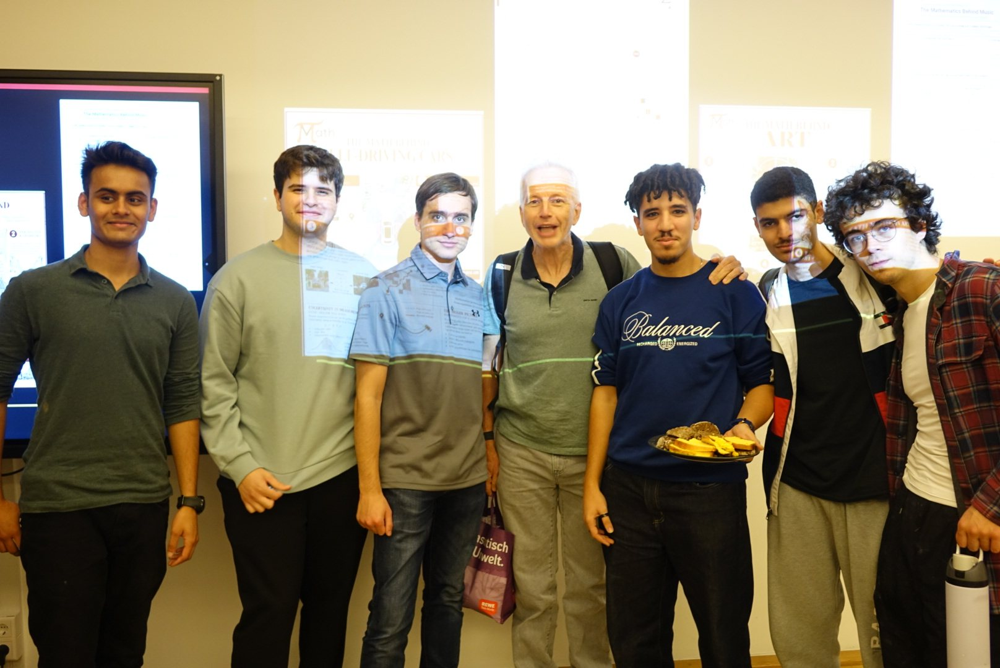
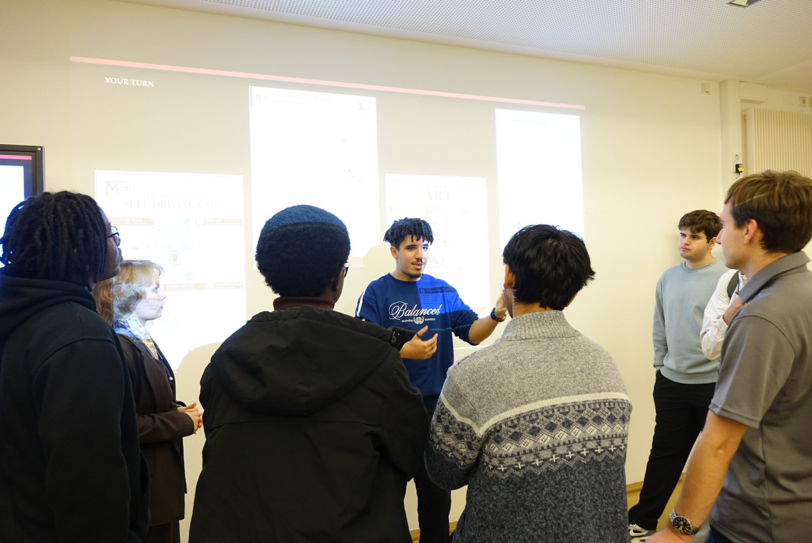

Think. Calculate. Create. An introduction to our community, the people behind it, and the opportunities ahead.
At the Math Society information session, students met the society’s co-presidents and team leads, learned about its guiding motto — Think, Calculate, Create — and explored ways to take part in campus mathematics activities. The presentation introduced past talks, the Undergraduate Seminar and Student Mathematical Journal, the Mathathon, and opportunities to join the society’s teams.
Team leads also introduced their areas of work, including public relations and design, visual media, logistics and technology, and encouraged interested students to get involved.
A look back at events exploring mathematics in AI and machine learning, game theory, chaos theory, finance, film and engineering.
Students heard how the Undergraduate Seminar supports short research projects, mentoring and presentations, with opportunities for selected work to appear in the Student Mathematical Journal.
The team reflected on the Mathathon and introduced plans for a financial datathon involving teamwork, research, presentations and industry engagement.
Plans presented included a GitHub workshop, an AI and large language models seminar, the next Undergraduate Seminar, and regular mathematical reading and support sessions.
The formal introduction led into a poster session where attendees could ask questions and explore how mathematics appears in different fields.
From search algorithms and machine learning to neural networks.
Exploring mathematical ideas in visual creativity.
Discovering the mathematical structures that shape sound.
Mathematics in autonomous navigation and racing.








Prefer YouTube? Watch the full recording on YouTube.